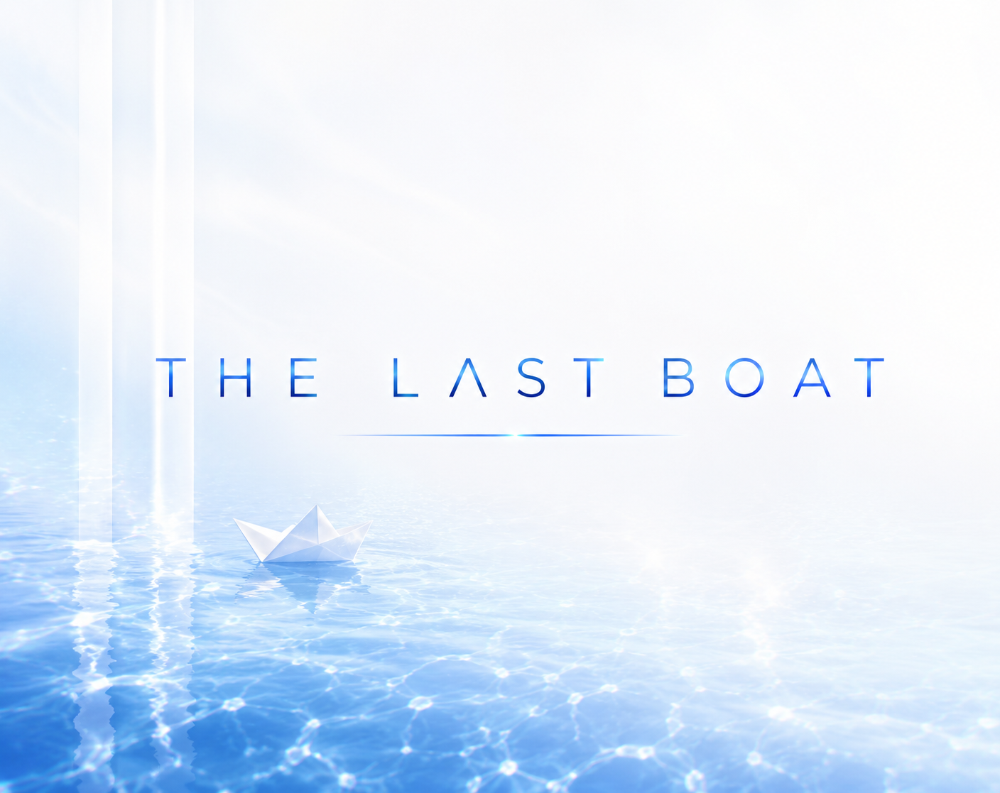

Released
The Last Boat
A short reflective visual novel about the lives we fail to see.
Available through the official Yorokobi Studio page on itch.io.
Published stories and projects currently taking shape at Yorokobi Studio.

A short reflective visual novel about the lives we fail to see.
Available through the official Yorokobi Studio page on itch.io.
A short romance and drama visual novel currently in development.
Release date to be announced. More details will be shared when the project is ready.
Projects without a confirmed release date remain in this section until the studio is ready to share more.
New releases arrive first on itch.io. Development updates are shared on X.